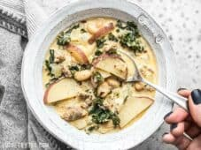
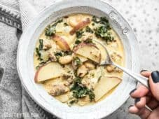
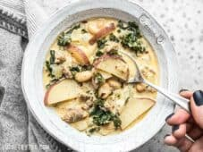

.jpg) 

All the latest Recipes, Meal Preps and Meal Plans you need to know.

The mild, slightly rich flavor of a cod filet is the perfect base for the zesty fresh garlic and sweet, creamy butter. And as if this Garlic Butter Baked Cod wasn’t already perfect, it also happens to be incredibly fast and easy to make. Weeknight dinner perfection!
You can use fresh or frozen cod, whichever is available to you. If using frozen, make sure the cod fillets are fully thawed before topping with the butter mixture and baking.
Soft boiled eggs are my new obsession. The whites of the eggs are firm, but the yolk stays silky, creamy, and in a liquid gold state. It’s a little like a cross between butter and melted cheese. They’re seriously divine. And they’re not just for breakfast! I enjoy soft boiled eggs with toast, as an addition to bowl meals, as a topper for salads or soup (hello, ramen!), or just as a quick snack. I pretty much add soft boiled eggs to everything I eat, no matter what time of day.
As soon as the weather turns cool, I grab the cozy sweaters and start cooking the comfort food, like this Classic Baked Ziti. It’s rich and gooey with its layers of pasta, homemade red sauce with Italian sausage, and three types of melty cheese. Total comfort in a bowl. And the best part is that Baked Ziti is not fussy. You don’t have to worry about delicate sheet pasta or getting your layers perfect. It’s freeform, messy goodness at its best!
If you can’t find ziti (a smooth, tubular shaped pasta), you can substitute penne or rigatoni in this recipe. Rigatoni is the most similar to ziti, the only difference being that it has a ridges and is slightly shorter and wider.
This dish is incredibly easy and super flavorful. The pasta cooks in a mixture of broth, herbs, and aromatics, like onion and garlic, which really ramp up the flavor. The starch that dissolves off of the pasta as it cooks helps create a thick sauce right in the pot. It’s magic! So fast, so easy, and SO flavorful. I do want to mention, though, that if you’re the type of person that can’t handle pasta any other way than al dente, you may not like this one. The pasta can get a little soft, if you let it cook even just a little too long
I made a few changes to the original recipe, as usual, to fit my needs. First, instead of using fresh basil, which can cost an arm and a leg, I used frozen spinach for a pop of green and increased the dried basil to make up for the flavor. Second, I wanted more “stuff” in my pasta, so I used a larger can of diced tomatoes and reduced the amount of vegetable broth to compensate. Lastly, I added a light sprinkle of shaved Parmesan over top. Other great ideas for add-ins: mushrooms, parmesan, artichoke hearts, or olives.
I think next time I’ll save adding the frozen spinach until the end so that it will defrost and heat quickly from the pasta’s residual heat. That way the spinach will stay bright green and pretty, and it will not darken the pasta as it cooks. But hey, either way it tasted fantastic
Oh WOW. It should be illegal for noodles to be this easy AND this delicious. These spicy sriracha noodles are my new favorite quick fix! They only take about 15 minutes to make, they’re totally rich, flavorful, and SUPER SPICY. Like, “burn a hole through your stomach” spicy. Call me crazy, but sometimes I want that. No, I crave that. So, this one goes out to all of you heat seekers!
I didn’t need to change a lot about this recipe because it was pretty damn perfect the way it was, but I did make a couple of minor tweaks. I added an extra egg because I wanted this to be a little closer to two servings. I also added more sriracha (now 2 Tbsp compared to the original 1 Tbsp) because I actually wanted it spicier, and I wanted there to be a smidge more sauce
If you can’t find the same noodles that I used, don’t fret. You could make this with instant ramen noodles or even regular linguine. The noodles are just the vehicle for all of the other yummy ingredients!

Easy wins again! I’m on day 6 of an 8 day work week, so that means two things: I’m tired and I’m hungry. Quick skillet pasta dishes like this Creamy Tomato and Spinach Pasta are perfect for such an occasion. They require only a few ingredients, cook up super fast, and leave me feeling full and happy! :
This Creamy Tomato and Spinach Pasta recipe is kind of a meal on its own, but you may want to add a side dish, like crusty Garlic Bread, No Knead Focaccia Rolls, or a light Simple Side Salad. You can also beef up the recipe by adding some Garlic Herb Baked Chicken Breasts, or browning some Italian sausage in the skillet in the beginning, before the onion and garlic
This version of Creamy Tomato and Spinach Pasta uses just a touch of cream cheese and Parmesan to make a regular tomato sauce ultra-rich and creamy. If you’re not into cream cheese, you could also add a splash (1/4 cup or so) of half and half or heavy cream to achieve a similar effect.

I really like having pre-cooked chicken in the fridge that I can use to quickly whip up a sandwich or wrap, or add protein to a bowl of pasta, salad, or one of my “leftovers” bowls. While I often use a rotisserie chicken for this purpose, they are sometimes just too salty and we have a hard time going through a whole chicken between the two of us. So, this week I experimented a bit more with the “low and slow” roasting method and made these incredibly tender and juicy Herb Roasted Chicken Breasts.
I first used the “low and slow” technique with my Oven Roasted Chicken Legs and was really pleased with not only the texture of the meat, but the delicious juices that were left in the dish after roasting. This time I combined the butter with a trio of herbs and slathered it over two bone-in, skin-on split chicken breasts. The breasts were quite large, so I lowered the heat a bit and let them roast even longer before removing the cover to let them brown. The results were even more incredible. I pulled the meat from the breasts after cooking, drizzled the juices over top, and have been snacking on the meat all week.
Yes! You can make this dish even faster and easier! Just follow the technique used in my Pressure Cooker Chicken and Rice recipe (pressure cook then broil to brown the skin). üëç
Can’t stop, won’t stop with the yummy soups over here! Soup is easy, soup is filling, soup is an easy way to pack some more vegetables into your day, and soup (usually) freezes well. This week I’m bringing you this awesome Vegetable Barley Soup that is packed with tons of color, texture, and flavor. And thanks to a healthy dose of barley, it’s also super filling. I’m so glad this recipe makes a huge batch because I’m going to be living off the frozen leftovers of this soup for the rest of winter!!
Barley is a short, chewy grain that is great in soups, stews, salads, pilafs, and more. You can usually find it in the grain section of your grocery store, near rice and dry beans. It’s usually labeled “pearled barley” which simply means the outer husk and some of the bran has been removed. Barley does contain a small amount of gluten, so it is not considered a gluten-free food.
Yep! If you’re not into barley or can’t find it, you can use another grain, like farro or wheat berries, or even pasta. A small shape, like ditalini would be awesome.
Fun fact: the number of times people searched the internet for hot chocolate in December 2020 was twice that of previous years. Why? Probably because we all needed that extra comfort after a hard year. I don‚Äôt know about you, but I still need the creamy, cozy comfort of a mug full of hot chocolate. üòÖ Thankfully, homemade hot cocoa is super fast to make, you can make one mug at a time or in a big batch, and I‚Äôve got a bunch of fun ideas for add-ins so you can make a new flavor every time. :) Keep scrolling for delicious, chocolatey goodness!
I went all out with this hot chocolate. To make it extra creamy and extra chocolatey I used a 50/50 mix of milk and half and half, semi-sweet chocolate, and unsweetened cocoa powder for a one-two chocolate punch. I added just enough sugar to keep it sweet, but not so much that it’s hard to finish your mug (you can always add more to taste). The result is a perfectly balanced rich, sweet, and chocolatey mug that will give you all the warm and fuzzy cozy winter vibes
I used Baker’s semi-sweet chocolate because that’s what I had on hand, but you can definitely use semi-sweet chocolate chips to make this hot chocolate more affordable. You can also experiment with using either milk chocolate or dark chocolate depending on how sweet or bitter you like your hot cocoa. Semi-sweet is right in the middle, which fits my flavor preferences.